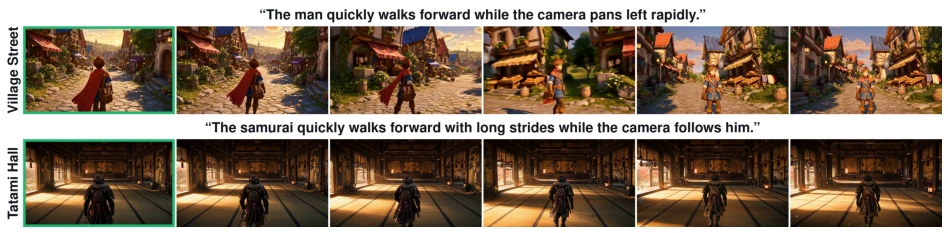
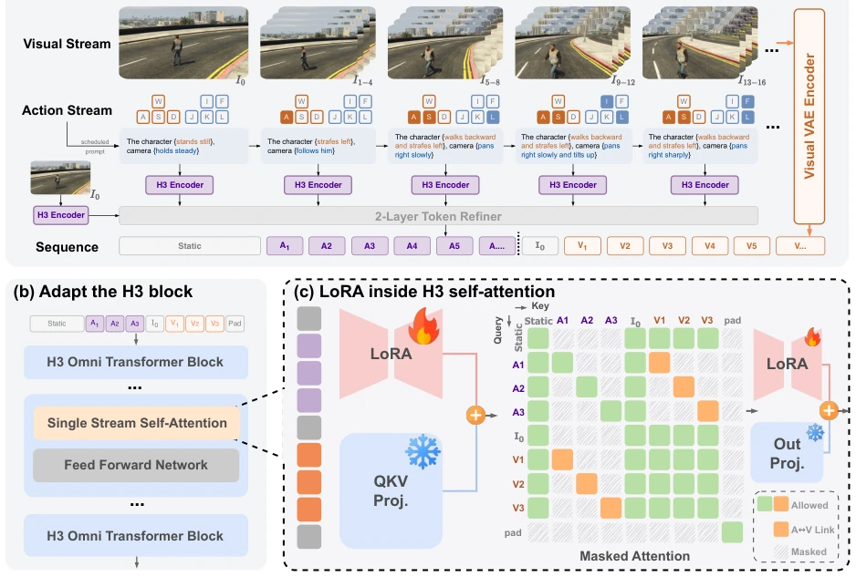
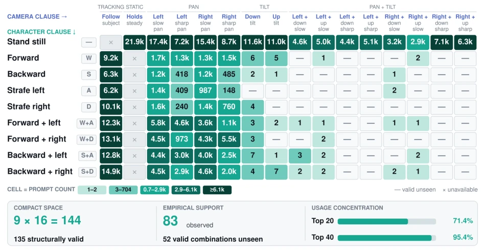
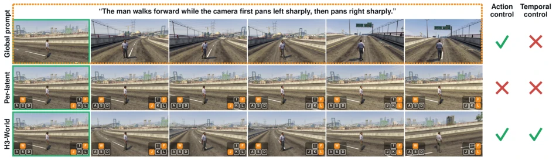
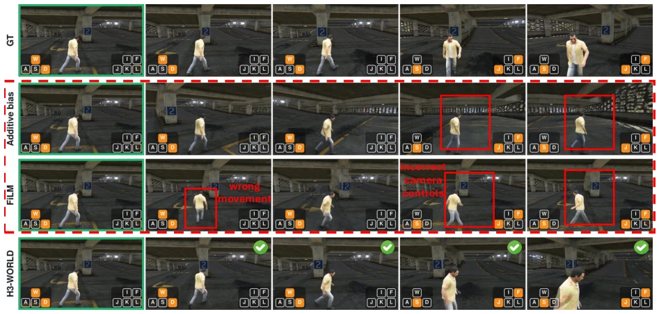
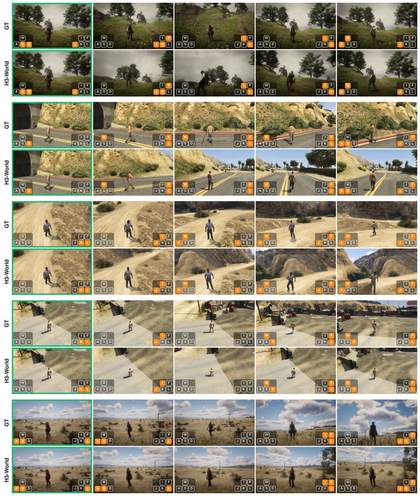
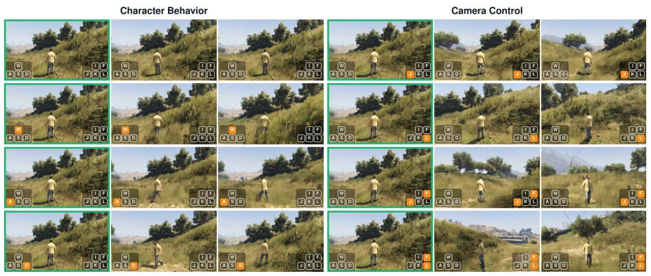
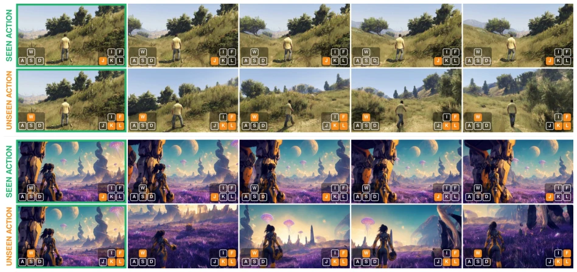
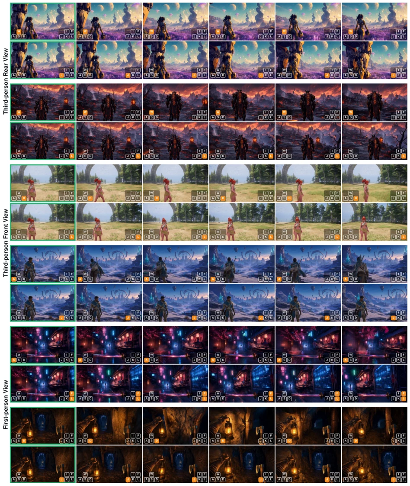
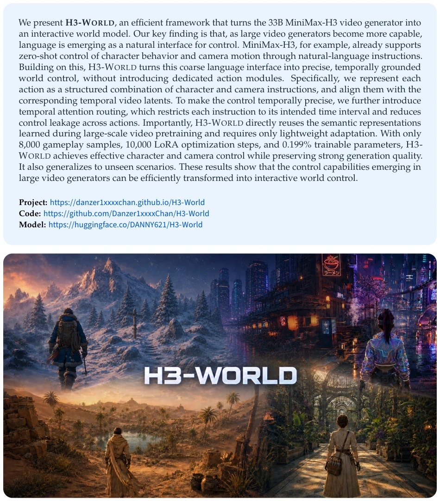

This paper directly adapts the 33B MiniMax-H3 video generation model into a world model, with the core idea being "language as control". The authors find that large models inherently possess language control capabilities, though they are too coarse, so they use LoRA fine-tuning combined with attention routing to make them precise. This approach is quite resource-efficient, running with only 0.199% parameters without requiring complex action embedding modules, representing a smart "shell listing" practice. However, a critique is that this system is currently merely a "short drama generator", capable only of generating fixed-length clips, unable to perform long-term planning or maintain persistent states, falling short of a true interactive world model. Moreover, relying mainly on game data, generalization to the real physical world? Let's not rush. Nevertheless, for the video generation field, this is indeed a smart "low-cost" strategy, proving that control capabilities are hidden within pre-trained models, it's just that no one dared to tune them directly before.
Existing world models typically treat control as an independent task, requiring the introduction of discrete action embeddings, conditional modules, or geometric constraints [20-28]. These methods rely on additional action-video trajectory supervision, increasing computational and storage overhead, and may even interfere with pre-trained capabilities. More fundamentally, they treat control as something that needs to be learned from scratch. However, H3-World points out that large video generators (such as MiniMax-H3) have already demonstrated coarse control capabilities through text instructions [1]. Language is becoming a high-level abstract layer for visual dynamics. Existing systems fail to fully utilize this intrinsic language understanding capability, instead starting from scratch. This paper aims to mine the existing language control potential in pre-trained video models, transform it into precise interactive control, avoid introducing dedicated action modules, thereby preserving powerful generative generalization.

Figure 2. Vanilla MiniMax-H3 already exhibits coarse zero-shot control through textual motion instructions.
H3-WORLD is built based on MiniMax-H3, with the overall process divided into semantic action interface, latent alignment time binding, and single-egress routing. First, character and camera actions are converted into composite text instructions (e.g., "character moves back, camera pans right"), mapped to H3's text condition space. Second, each video latent interval corresponds to an independent action prompt, encoded via a shared encoder, and aligned with video latent vectors on the time axis. The key innovation lies in "Single-Egress Routing": in the self-attention mechanism, the action span can only read its matching video latent vector, preventing control information leakage to other time segments. Video latent vectors retain bidirectional attention to maintain coherence. Finally, LoRA is used to fine-tune the attention projection, training only 0.199% parameters while the backbone network is frozen. This method directly reuses pre-trained semantic priors, requiring no extra action modules, achieving precise mapping from text to video dynamics.

Figure 3. Overview of H3-WORLD. (a) Latent-aligned action prompts are independently encoded and packed with the static semantic condition, initial observation, and video latents. (b) MiniMax-H3 processes the packed sequence through single-stream self-attention. (c) LoRA adapts the attention projections under single-egress routing, which connects each action span directly to its matched video latent and retains bidirectional attention among video latents.

Figure 4. Training coverage of the action space. Of 135 valid character–camera pairs, 83 occur in 291,264 prompts and 52 remain unseen. The top 20 and 40 pairs account for 71.4% and 95.4% of prompts.
Experiments are based on the ABot-World-Explorer-500h dataset, containing 7,872 game clips. Comparison baselines include frozen H3, zero LoRA interface, and direct action conditioning (Additive-bias, FiLM) [32]. Evaluation metrics include cumulative horizontal optical flow and qualitative observation. Results show that global prompts cannot distinguish actions across different time segments, while H3-WORLD can precisely follow preset camera turns and character movements. In generalization tests on unseen action combinations and different visual scenes, the model can maintain scene layout and execute new instructions. Ablation studies indicate that LoRA adaptation and routing mechanisms are crucial for temporal control. Although the effect is significant, the model only supports short-term generation, lacking persistent state and planning capabilities.

Figure 5. Action response before and after adaptation. The scheduled camera pan switches from left to right after latent 15. Check marks and crosses summarize action control and temporal control for each condition.

Figure 6. Action-conditioning interfaces on a held-out clip. GT provides the recorded reference motion. Direct additive- bias and FiLM conditioning yield limited or inconsistent responses to the recorded controls, while text-based H3-WORLD produces coordinated character and camera changes.

Figure 7. Following recorded controls on held-out clips. Ground-truth videos appear above the corresponding H3- WORLD generations produced from the same initial observation and action sequence.

Figure 8. Controlled action comparison. The initial observation, seed, and sampling configuration are fixed across rows. Changing the action produces distinct character and camera motion, including stronger fast pans.

Figure 9. Compositional action generalization. Each group contrasts a seen action with an unseen composition of observed character and camera clauses on held-out gameplay (top) and out-of-distribution (bottom) observations.

Figure 10. Visual generalization to diverse initial observations. Each scene is evaluated with one character-control command and one camera-control command using the same learned action interface.
其他图片Other Figures

Figure 1: H3-WORLD enables character and camera control across diverse visual environments.